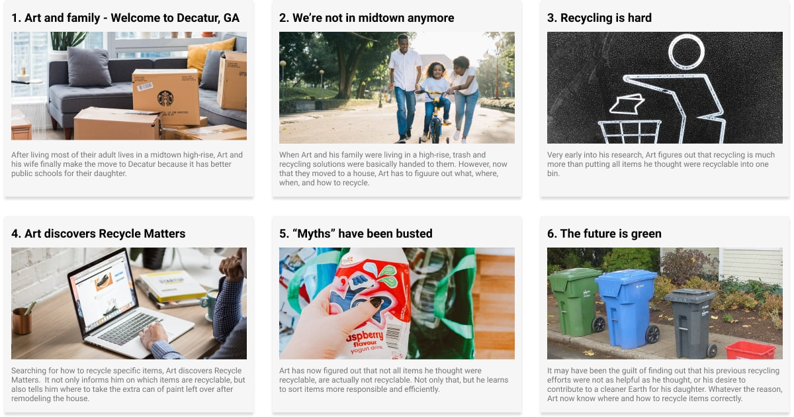

Recycle Matters
Website design for a cause
The online recycling tool built to help Americans find recycling locations for specific items and info on how to recycle them correclty.
Phase I
DISCOVER

My Role
- UX Researcher
- UX/UI Designer
- Interviewer
Timeline
- Two weeks
Team
- Brandon Pennington
- Jesus Garcia
- Miguel Ruddock
- Owen Smith
The Problem
Let's face it, recycling isn't sexy. Recycling is intended to reduce pollution and provide a sustainable method for disposing of waste. We have observed that the current systems and services are not informing people on how to recycle correctly. This is causing more contamination in recycling bins, in-turn, causing recycling centers to lose money and Americans to lose confidence in its effectiveness.
Who are we trying to impact?
We chose people who have a desire to recycle but want the process to be as simple as possible. By initially targeting people who have a desire to recycle, My team and I, wanted to secure advocates future outreach campaigns and ensure effective information.
What was the business challenge?
Government municipalities and Recycling Centers are losing money due to contaminated items. In addition to this china, who previously accepted most of the world's recycled plastics has stopped this and embraced a new technology based model for their economy.
Research Highlights
Lack of Recycling Knowledge
50% of the people surveyed were unaware of the proper procedures to take when recycling specific items. In addition to that, people don't kknow which materials can be recycled.
Access and Convenience
These were pain points and hindrances experienced by the participants were surveyed and interviewed. If they were expected to go out of their way to recycle they were less apt to go through with it. Depending on the item, if recycling were available in central locations that participants frequented this would serve as motivation.

Economic Status
Some participants felt that recycling was more of an activity for the middle and upper class. With a struggle for basic needs to be met, recycling for some, is extremely low on the priority list. In addition some participants felt that they were shamed for not recycling.
Research Goals
We knew at the start, that 37% of 18-34 year olds say that they wish they recycled more. Our MVP goal was to make the general public more informed about best recycling processes. We also wanted them to be able to get a sense of pride in their efforts and living in a cleaner environment. To do this, we chose questions that we thought would garner the most insight, allowing us to design for impact.
Research Questions
- What motivates people to recycle?
- What are obstacles to recycling? Pain-points?
- What are people’s perceptions about the effectiveness of recycling?
- How knowledgeable are people about recycling the correct way? How much do people know?
- Where do people go to learn about recycling?
Persona
At 32 years old, Our persona Art Phillips is within the age range of people who wished they recycled more. He does what he can and what he knows, one of which is reusing grocery plastic bags as garbage bags. He prefers organization to chaos and he is conscientious about most things. However, he lives a busy lifestyle and anything that would allow convenience into his life would be a win.
{kind=link}

Phase II
DEFINITION

{kind=link}
Prioritizing features based on need and feasibility
We decided to focus on the following features based on insights from our 2 stakeholder interviews:
- Search feature
- Safety - Escape button to quickly close the site
- Volunteer Call-Action-Newsfeed
- Make the donation process more user friendly
Crafting a story to design effectively
We crafted a story for our persona, Art, that included he and his family moving to an unfamiliar neighborhood. This would ensure that we intentionally created clear communication on how to effectively recycle.
Storyboarding
Art makes the move with his family from city life to a rural community. Here he has to re-eduucate himself on the what, where, when, and how's of recycling for the new area he lives in. He finds a great resource Recycle Matters that helps him to answer all these questions.
Storyboard
{kind=link}
Business Model Canvas

Looking at the bigger picture
County Websites are dry and laden with confusing information. We didn't want to recreate a site that wouldn't appeal to our persona Art. Keeping our customer segment in mind, applying the Business Model Canvas helped us to identify the necessary parts for it to be successful and sustainable. It also forced us to ask the best design question: Does this make sense?
Business Model Canvas
Our Key Stakeholders were Recycling Centers and Government Municipalities. With the nature of the platform being for education we decided that it would be more advantageous for it to operate as non-profit. There would also be a huge emphasis on having a good Content Management System for our Key Activities.
Phase III
DEVELOP

Phase IV
DELIVER